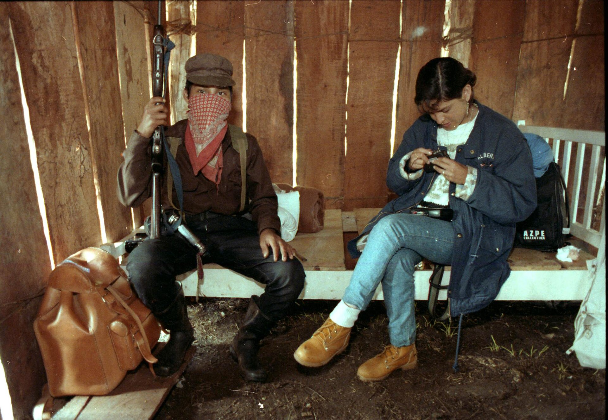
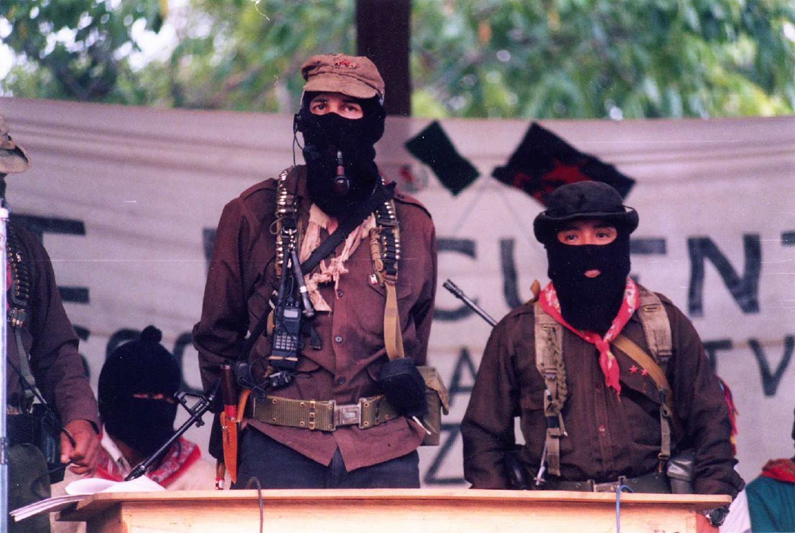

They lost the shooting war in twelve days and won the story war for decades.
Debate this
"Online solidarity from strangers does a movement more harm than good."
Argue from this, not from nothing: Blackout Tuesday, June 2, 2020.
Roughly 28 million black squares went up on Instagram in one day, most of them posted by people who wanted to help.
Many were tagged #BlackLivesMatter, which was the tag organizers were using that week to move protest locations, legal-aid numbers, and safety warnings. Open the tag and you got black squares. Organizers spent the day publicly asking people to stop using it.
The same wave of strangers sent the Minnesota Freedom Fund about $35 million in a few weeks, after a normal year of roughly $100,000. It could not spend it fast enough and got attacked for that too.
Nobody in this story acted in bad faith. The harm and the help came from the same 28 million people on the same afternoon. So: more harm than good, or not, and how would you tell?
Where we are
Project 2 gets set up this week. Here is what you already have, and the one piece still missing.
From Week 7, Step 1The five elements of narrative: conflict, characters, imagery, foreshadowing, underlying assumption. You use them to take apart the story already circulating about your cause.
From Week 8, for Step 6Key messages. Three sentences, written down before anything gets designed, that you want a stranger to be able to repeat back to somebody else. Statements, not slogans and not instructions. ACT UP's first one was "your government knows and is choosing not to act."
What's missing is where to hit. You can diagnose a story perfectly and still have no idea where to push on it. Step 2 of Project 2 asks for your point of intervention, and that is what today's case teaches.
Goal of today
What you'll walk out with
You'll meet a movement that could not win a fight and chose its ground anyway. Along the way: the communiqué and what makes one travel, the mask that worked by hiding a face, how a village assembly decides who is allowed to say yes, and what the US Army's own think tank called this when it couldn't classify it. Then we get to the thing you need for Step 2: the point of intervention, the place in a story where pushing actually moves something.
Before the question · what you need to know
Chiapas, 1994. Three facts, then I'll ask you something.
Who
Mostly Maya farming communities in the southern Mexican state of Chiapas: Tzotzil, Tzeltal, Ch'ol, and Tojolabal people, speaking four different languages. Chiapas was and is among the poorest states in Mexico, and it grows much of the country's coffee and electricity.
What NAFTA was
The North American Free Trade Agreement, a deal among the US, Canada, and Mexico removing tariffs across the continent. Signed 1992, in force January 1, 1994. In the US it was argued about as a jobs question. In Chiapas it was a land question.
Why it mattered there
To qualify for the deal, Mexico amended Article 27 of its constitution in 1992, ending the protection of the ejido, land held in common by a village and not sellable. Communal land became private and sellable, which means loseable. If you have read about the Dawes Act of 1887 in a US history class, that is the same move: break collectively held Indigenous land into individual parcels, then watch it leave. NAFTA also opened Mexico to subsidized US corn, which undercut the price small maize farmers lived on.
Does this touch your life? The agreement is still running. It was renegotiated and renamed the USMCA in July 2020, so it is the same machinery under a different label, and it still sets the price of a lot of what is in your refrigerator.

The Zapatista uprising, Chiapas, January 1994. Photo via Wikimedia Commons (CC BY-SA 4.0).
New Year's Day, 1994
A few thousand farmers with old rifles seized six towns on the exact morning the trade agreement took effect. They could not win a war and knew it. So why that morning?
They had been organizing in the jungle for ten years. They could have gone any day.
Read it yourself
This went out the same day. It is called the First Declaration of the Lacandón Jungle.
"They don't care that we have nothing, absolutely nothing, not a roof over our heads, no land, no work, no health care, no food, no education, no right to freely and democratically elect our representatives, no independence from foreigners… But today we say: enough is enough."
First Declaration of the Lacandón Jungle, EZLN, January 1, 1994. "¡Ya basta!" is the Spanish.
Communiqué
An official dispatch from a group to the public, said "kuh-MEW-nih-kay." Governments issue dry ones. These were part manifesto, part poem, part letter, written by a masked man who called himself Subcomandante Marcos and wrote more like a poet than a general.
How it got out, and why that's the lesson
Written by hand in the jungle. Carried out and mailed to Mexican newspapers. Typed onto the young internet by sympathizers within hours. Translated into a dozen languages within days. They owned the writing and rented every channel that moved it, and because the thing being moved was text, it survived every copy.
Here's the idea
Eleven words carry that declaration: work, land, housing, food, health care, education, independence, freedom, democracy, justice, peace. Not one of them needs Chiapas explained first.
What a policy shop would have written"We demand the repeal of the 1992 amendments to Article 27 and the renegotiation of agricultural tariff schedules under the trade agreement." Accurate. Recruits people who already agree and nobody else.
What they wrote"No land, no work, no health care, no food, no education." Same demand. A stranger in Ohio can finish the thought in their own life.
When your survival depends on strangers watching, you write for the stranger three countries away, not for the specialist in the room. That is also the trade-off, and it has a cost. "No land" sounds like a condition, the way poverty sounds like weather, and the response to a condition is sympathy. "Article 27 was amended in 1992" tells you a specific law was changed by specific people on a specific date, which means it is something that could be changed back. The detail is where the accountability lives, and the version that crosses borders is the version that leaves it out.

Subcomandante Marcos, the masked Zapatista spokesman. Photo: César Bojórquez (CC BY 2.0).
The man with no face
The government kept trying to unmask him and publish his legal name. Why would that have helped them, and why did staying anonymous make him more difficult to answer?
"Marcos is gay in San Francisco, Black in South Africa, a Palestinian in Israel, a Jew in Germany, a woman alone on the subway at 10pm. Marcos is every silenced, resisting minority saying ¡Ya Basta!"
Subcomandante Marcos, answering reporters who asked who was behind the mask.
The mask became a mirror.A face makes it one man's story. No face makes it every man's story.
Unmasking him would have turned a movement back into a biography, which is a thing a government knows how to discredit. A name can be investigated. A mirror cannot.
Callback to Week 3: "Publius" in the Federalist Papers. A shared mask can amplify.
Not a media question · an authority question
Marcos did all the talking and could not agree to anything.
The community assembly
How these villages decide: everyone meets and talks a question through, sometimes for days, until they land on an answer together. Not a vote where 51% wins and the rest comply. Slow on purpose.
Mandar obedeciendo
"To lead by obeying." The spokesman carries out what the assembly decided. He does not decide and then inform them.
What that looked like in practice, in this case. In 1994 the government put a peace offer on the table. Marcos could not take it. The terms went back out to the villages, were read and argued in assemblies, and the base voted: 97.88% rejected the offer, 2.11% accepted. Then he went back to the table and said no.
Earlier, the decision to rise at all was taken the same way, by consultation across the communities, not by a commander. So when the government looked for the one person to buy off or arrest, there wasn't one. The assembly is slow, and the slowness is what made them impossible to settle with cheaply.
The fast half
Netwar
A term coined by John Arquilla and David Ronfeldt, two analysts at the RAND Corporation, a US think tank set up in 1948 to do research for the Air Force and still a main supplier of strategy to the Pentagon. Netwar is their term for conflict waged by a swarm of small connected groups rather than one chain of command. No general to capture, no headquarters to raid.
An electronic fabric of struggle
Scholar Harry Cleaver's phrase for what carried the communiqués. The people relaying them were not members and took no orders. They translated, posted, and faxed because they wanted to, which is why shutting it down would have meant shutting down thousands of unconnected strangers.
Here is how seriously this was taken. In 1998 RAND published a full study called The Zapatista "Social Netwar" in Mexico. The research arm of the US military wrote a monograph about a few thousand farmers with a typewriter and some sympathizers with email, because it did not have a category for what had just happened.
Pick one
So which one actually saved them, the network of strangers or the assembly that took three days to answer a question?
Think back to the black squares before you answer.
The Lacandón jungle, Chiapas, where the communiqués were written. Photo via Wikimedia Commons (public domain).
Both, and it had to be both.
A message moving through strangers with no community behind it is 28 million black squares. A community nobody outside ever hears about gets crushed quietly.
The assembly built the thing worth defending and decided what the answer would be. The network made sure the world was watching while they defended it. Neither one works alone, and this is the distinction Project 2 will keep asking you for: who is the slow core, and what is the fast reach.
The case · twelve days, then thirty years
The army answered with overwhelming force and by any military math it was finished in days. What broke the math was attention. Communiqués went out and came back translated, solidarity groups filled embassies and newsrooms, and the government found it could not run a quiet offensive against people the world had started reading about. Around twelve days in it called a ceasefire and sat down to talk.
What they won. Not their formal demands. Survival, and self-rule: the Tzotzil, Tzeltal, Ch'ol and Tojolabal communities that backed them still run their own schools, clinics, and councils in Zapatista territory, and have for thirty years.
What it cost. On December 22, 1997, a paramilitary group called Máscara Roja, tied to the governing PRI party, killed 45 Tzotzil villagers at Acteal, including 21 women and 15 children. They were not fighters. They were a pacifist Catholic group called Las Abejas, the Bees, at a prayer meeting, suspected of sympathizing. State police sat at the schoolhouse and blocked the road out while it went on for hours. Mexico did not admit responsibility until 2020.
Was the US behind it? Not directly. What declassified US records do show is the chain behind it: Washington was funding and equipping the Mexican military through the counterinsurgency, roughly $37 million in aircraft in 1997 alone, and a 1999 US Defense Attaché cable describes "direct support" by the Mexican Army to armed groups in those same highlands.
What this is called
You can push on a story in five different places. The Center for Story-based Strategy calls them points of intervention.
Production
Where the thing gets made. A picket at the plant, a strike in the kitchen.
Consumption
Where it gets bought. A boycott, a sticker on a shelf.
Destruction
Where the damage lands. The clear-cut, the pipeline route, the flooded block.
Decision
Where somebody with power signs. The council vote, the board meeting, the day a trade agreement takes effect.
Assumption
The unstated belief the whole story needs in order to work. Hit here and you don't win the argument, you dissolve it.
The story about Chiapas was that it was a poor backward province with a local development problem. Which two of those five did January 1 hit at the same time?
Here's the idea
Decision and assumption, with one date. Rising on the morning the agreement took effect put them at the point of decision, which is why every reporter on earth was already looking at Mexico that day. And it broke the assumption, because now the poverty and the trade deal had to appear in the same sentence. Chiapas stopped being a backward province and became the predictable outcome of a law their own government had just changed to close the deal.
They could have risen in March with the same rifles and the same declaration, but that would have read as a disturbance in a poor state, and the trade agreement would never have come up.
This is Step 2 of Project 2. After you diagnose the circulating story with the five elements, you say what its underlying assumption is, and then you choose where you are going to hit it. Your point of intervention has to be a place that actually exists on a calendar or a map: a vote, a hearing, a route, a storefront, a date somebody already has to pay attention to. "Raise awareness" is not a point of intervention.
Workshop
Find your assumption, then pick your date.
Use your own cause. If yours is still thin, borrow one: a campus food pantrya rural bus routea river cleanupa tenants' union
Worked example · a rural bus route facing cutsThe circulating story. Low ridership, so the county is making a responsible budget decision.
The underlying assumption. That a route with nine riders is serving nine people's convenience. But if the county knew that three of those nine ride it to dialysis, that would probably change the response.
The point of intervention. Decision, and it has a date: the commission votes on the 14th. The backup is destruction, which is the 6:40 stop on the first morning after a cut, with the three dialysis riders standing there.
Why not awareness. A month of posts about rural transit changes nothing on the 14th. Nine riders in the room with a photograph does.
The circulating story, short version
What does somebody who isn't paying attention already believe about your cause? Their version, not yours.
Its underlying assumption
What has to be accepted, without ever being said, for that version to make sense?
Your point of intervention
Which of the five, and give the actual date, address, or object. If you can't put it on a calendar or a map, keep looking.
The test
Of the five push points, which one have you been pushing on without meaning to? And which one do you think has been failing?
How this stacks up
Here is Project 2 being built.
A county is cutting the 6:40 bus. Last week you took apart the story. This week you decide where to push on it.
Week 7 · Step 1, the five elements, run on the circulating story
Conflict
Theirs: a county with a tight budget against a route nobody rides. Ours: nine people with no other way to get to dialysis and third shift, against a line item.
Characters
Theirs: the commission is the responsible adult, and the riders are a number. Ours: Mr. Harless, who rides it three mornings a week to dialysis, and a commission that has a decision in front of it.
Imagery
Theirs: a ridership spreadsheet. Ours: the 6:40 pulling out with nine people on it, and the clinic parking lot at 7:15.
Foreshadowing
Theirs: the route is dying anyway, so the cut only makes it official. Ours: cut the 6:40 and three people start missing treatment inside the first week.
Underlying assumption
That ridership measures how much a route matters. On a lifeline route, a low number can mean the opposite: the people still on it are the ones with nothing else.
Week 9 · Step 2, the same cause run through the five push points
Production
The garage where the schedule gets built. Nothing to push here. The drivers already agree with you.
Consumption
The fare box. Nothing to push here either, and raising ridership by the 14th is not possible.
Destruction
Live. The 6:40 stop on the first morning after the cut, with three dialysis riders standing in the dark. You have to lose the route to get the photograph, so it is a second choice.
Decision
Live, and dated. The commission votes on the 14th. Nine riders in that room, and one of them says the word dialysis.
Assumption
Live, and free. This is the same sentence Step 1 turned up, looked at a second time. Step 1 asked what the assumption is. Step 2 asks whether attacking it is the best use of your effort. Here it is, because saying in public that ridership is the wrong measure for a lifeline route forces the budget argument to be rebuilt before anyone can use it again, and saying it costs nothing.
Where we go from here
Our word is our weapon.
Thursday's module: read a full communiqué, then run the five elements on the story circulating about your own cause and write down the assumption underneath it. That is Step 1 and Step 2 of Project 2, Narrative Strategy, which is set up this week and due Week 11.